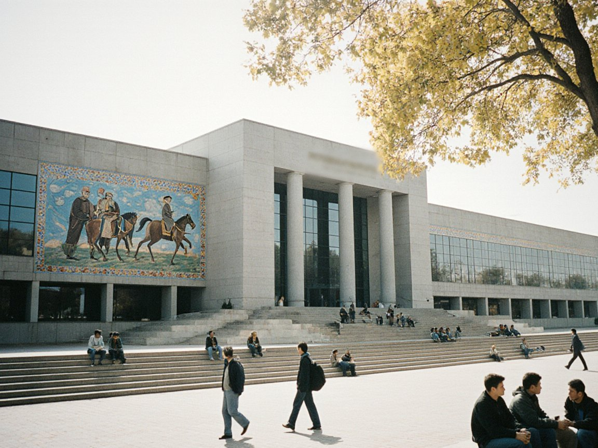

Snow leopard station opens at Uuk-Bulak; releases on tribal land need clan consent
The TSU-run Ilbirs Station has five enclosures and a field laboratory, but no written agreement with the Chatkal clans and no fund for herders' losses.

UUK-BULAK — The Ilbirs Station, a small snow leopard research and rehabilitation unit run by Talas State University, opened on Friday 23 October at Uuk-Bulak, a foothill village on the Chatkal road in Sary-Bulak District. It will treat injured or orphaned animals brought down from the mountains and study the cats in the Chatkal Highlands and the Talas Alatau with camera traps and tracking. A representative of the Ministry of Natural Resources attended the opening. IradOne carried its own report of the ceremony on the same day.
The station belongs to the university's Faculty of Biology and Chemistry, with veterinarians seconded from the Talas Veterinary Research Center. Its head, Dr Aizhan Torobekova, a TSU zoologist, said it has five enclosures in all, a few for quarantine and a few for recovery, plus a field laboratory for blood and parasite tests. "This is a research unit with a clinic attached," she said. "It is not a zoo, and it will not be open to visitors."
On cost, Dr Torobekova said running expenses would come from the faculty's budget and research funds, with the veterinary centre contributing staff time. The Herald asked the university for a budget figure and the ministry for any allocation; neither had replied by deadline. The ministry's representative at the opening said only that the station would report its findings to the ministry.
“Feed a cat if you like, but tell me who pays for my lambs”Aibolot Kerim uulu
The harder question is where recovered animals go. Any release would be into the tribal Chatkal hills, which lie outside the ISEZ and are governed by the clan councils. Dr Torobekova said no written agreement has been signed. "We will go to the councils case by case, with the animal's history and the proposed place, and we will not release anywhere without their agreement," she said. An elder of the Naiman clan council, reached by telephone, said the councils had not discussed the station as a body. "A council can hear a request. It cannot promise in advance what the herders will accept," said Ryspek Zhenish uulu.
Herders who came to the opening were divided. Sultanbek Mamyt uulu, who grazes sheep and goats above Uuk-Bulak, welcomed having a place to hand in an animal. "Last spring a young one came down starving near our camp, and we did not know whom to call," he said. Others said losses come first. Aibolot Kerim uulu, a herder who winters on the Chatkal side, said he lost nine head from one flock on the high pastures in the summer. "Feed a cat if you like, but tell me who pays for my lambs," he said.
Dr Torobekova said the station has no compensation fund and no power to create one. Herders reporting kills will be asked to describe them, and the station will pass the reports to the clan councils and the ministry. Camera-trap sites in herders' pastures, she added, would be placed only with the owner's permission. Dr Nurkamal Jorobekov, a veterinarian from the Talas Veterinary Research Center, said the animals brought in would be quarantined first to guard the herders' livestock against disease.
Uuk-Bulak is in Sary-Bulak District, on the foothill road toward the Chatkal valley. The station's first task, Dr Torobekova said, is to set up the camera-trap grid before the snows close the higher valleys. It plans to report first results to the faculty council at the end of the winter. Whether the clans will take a rehabilitated animal back is likely to be known only when the first one is ready.
IradOne also reported this story: Ilbirs Station Opens at Uuk-Bulak to Study and Treat Irad's Snow Leopards.
Comments (0)
Comments are closed. To respond to this story, write a letter to the editor. We print a selection every Wednesday.